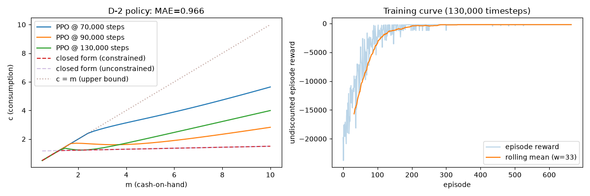
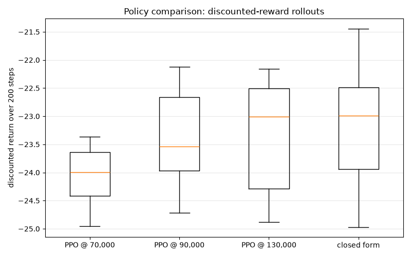

Note
Go to the end to download the full example code.
PPO via Stable-Baselines3 on the D-2 Benchmark¶
This example shows how to solve a scikit-agent model with Proximal Policy
Optimization (PPO), a deep reinforcement-learning algorithm. Rather than
re-implementing PPO, scikit-agent wraps a BellmanPeriod
in a gymnasium environment and hands it to
the robust PPO implementation in
Stable-Baselines3 (SB3). The
PPOAgent class manages this wrapping, trains the
agent, and emits a standard scikit-agent decision rule.
We test it on the D-2 benchmark: the canonical infinite-horizon, perfect-foresight consumption-savings problem with CRRA utility. Because D-2 has a known closed-form solution, it is an ideal yardstick for checking that a learned policy converges toward the true optimum.
Model Structure¶
State variable: \(a_t\) — assets carried into period \(t\).
Information variable: \(m_t = a_t R + y\) — cash-on-hand.
Control variable: \(c_t\) — consumption, constrained by \(0 \leq c_t \leq m_t\) (no borrowing).
The agent maximizes expected discounted CRRA utility,
Closed-Form Solution¶
Under the return-impatience condition \((\beta R)^{1/\sigma} < R\), consumption is linear in total wealth with a constant marginal propensity to consume \(\kappa\):
where \(H\) is human wealth (the present value of the constant income stream). Near the borrowing constraint this unconstrained rule can exceed \(m_t\), so the true constrained optimum is \(c_t = \min(\kappa(m_t + H),\, m_t)\).
Note
The main limitation of the SB3 integration is that PPO uses a constant
discount factor gamma. It does not handle dynamic (state-dependent)
discounting out of the box, so models with a non-constant discount variable
are not yet supported by this path.
import matplotlib.pyplot as plt
import numpy as np
import torch
from skagent.algos.sb3 import PPOAgent
from skagent.bellman import BellmanPeriod
from skagent.distributions import Uniform
from skagent.env import discounted_rollout_reward
from skagent.models.benchmarks import (
d2_analytical_policy,
d2_block,
d2_calibration,
d2_constrained_optimal_c,
)
Configuration¶
We snapshot the learned consumption function at a few cumulative training-timestep counts so we can watch PPO close in on the optimum.
SEED = 0
CHECKPOINTS = [70_000, 90_000, 130_000]
MAX_EPISODE_STEPS = 200
N_EVAL_ROLLOUTS = 50
EVAL_ROLLOUT_STEPS = 200
INITIAL_A_LOW = 0.01
INITIAL_A_HIGH = 5.0
print("D-2 calibration:")
for param, value in d2_calibration.items():
print(f" {param}: {value}")
D-2 calibration:
DiscFac: 0.96
CRRA: 2.0
R: 1.03
y: 1.0
description: D-2: Infinite horizon CRRA perfect foresight
The Closed-Form Policy¶
The benchmark module provides
skagent.models.benchmarks.d2_constrained_optimal_c(), the closed-form
consumption function keyed on cash-on-hand \(m\) with the borrowing
constraint \(c \leq m\) applied. We use it both for the grid comparison
below and, wrapped as a skagent decision rule, for the rollouts.
def optimal_decision_rule():
"""Wrap :func:`d2_constrained_optimal_c` as a skagent decision rule."""
return {"c": lambda m: torch.as_tensor(d2_constrained_optimal_c(m))}
Build the Environment and Agent¶
A BellmanPeriod packages the D-2 block together with
its discount variable and calibration. PPOAgent wraps it in a gymnasium
environment and sets up SB3’s PPO; the discount factor gamma defaults to
the model’s DiscFac. We sample initial assets uniformly so the agent sees
a range of starting states during training.
bp = BellmanPeriod(d2_block, "DiscFac", d2_calibration)
initial = {"a": Uniform(low=INITIAL_A_LOW, high=INITIAL_A_HIGH)}
agent = PPOAgent(
bp,
initial,
max_episode_steps=MAX_EPISODE_STEPS,
seed=SEED,
ppo_kwargs={
"n_steps": 2048,
"batch_size": 64,
"n_epochs": 10,
"learning_rate": 3e-4,
},
)
Train PPO Incrementally¶
We train in stages, taking a frozen snapshot()
of the policy at each checkpoint. reset_num_timesteps=False keeps PPO’s
internal step counter (and learning-rate schedule) continuous across
successive learn calls. The snapshots are unaffected by later training, so
we can compare each one’s policy and rollout performance afterwards.
m_grid = np.linspace(0.5, 10.0, 41, dtype=np.float32)
obs_grid = m_grid.reshape(-1, 1)
snapshots = {}
c_learned_by_checkpoint = {}
prev = 0
for i, checkpoint in enumerate(CHECKPOINTS):
print(f"Training up to {checkpoint:,} timesteps...")
agent.learn(total_timesteps=checkpoint - prev, reset_num_timesteps=(i == 0))
snapshots[checkpoint] = agent.snapshot()
c_learned_by_checkpoint[checkpoint] = snapshots[checkpoint].predict_unscaled(
obs_grid
)
prev = checkpoint
total_timesteps = CHECKPOINTS[-1]
episode_rewards = np.asarray(agent.episode_rewards, dtype=np.float32)
Training up to 70,000 timesteps...
Training up to 90,000 timesteps...
Training up to 130,000 timesteps...
Compare Against the Closed-Form Optimum¶
We evaluate the closed-form consumption rule on the same grid. The unconstrained rule \(c = \kappa(m + H)\) can exceed \(m\) at low cash-on-hand, where the borrowing constraint binds; the constrained optimum takes the minimum.
a_grid = (m_grid - d2_calibration["y"]) / d2_calibration["R"]
c_optimal_unc = np.asarray(
d2_analytical_policy({"a": a_grid}, {}, d2_calibration)["c"], dtype=np.float32
)
c_optimal = d2_constrained_optimal_c(m_grid)
print(f"Policy error vs closed form (over m ∈ [{m_grid[0]}, {m_grid[-1]}]):")
print(f" {'checkpoint':>12} {'MAE':>10} {'MaxErr':>10}")
mae_by_checkpoint = {}
for checkpoint in CHECKPOINTS:
err = np.abs(c_learned_by_checkpoint[checkpoint] - c_optimal)
mae_by_checkpoint[checkpoint] = float(np.mean(err))
print(f" {checkpoint:>12,} {np.mean(err):>10.4f} {np.max(err):>10.4f}")
mae = mae_by_checkpoint[CHECKPOINTS[-1]]
Policy error vs closed form (over m ∈ [0.5, 10.0]):
checkpoint MAE MaxErr
70,000 1.7221 3.1892
90,000 0.6332 1.4832
130,000 1.0935 2.8046
Visualize the Results¶
The left panel shows the learned consumption function at each checkpoint converging toward the closed-form solution. The right panel shows the undiscounted episode reward over training, with a rolling mean to highlight the trend.
fig, axes = plt.subplots(1, 2, figsize=(12, 4))
for checkpoint in CHECKPOINTS:
axes[0].plot(
m_grid,
c_learned_by_checkpoint[checkpoint],
label=f"PPO @ {checkpoint:,} steps",
)
axes[0].plot(m_grid, c_optimal, label="closed form (constrained)", linestyle="--")
axes[0].plot(
m_grid,
c_optimal_unc,
label="closed form (unconstrained)",
linestyle="--",
alpha=0.4,
)
axes[0].plot(m_grid, m_grid, label="c = m (upper bound)", linestyle=":", alpha=0.5)
axes[0].set_xlabel("m (cash-on-hand)")
axes[0].set_ylabel("c (consumption)")
axes[0].set_title(f"D-2 policy: MAE={mae:.3f}")
axes[0].legend()
if len(episode_rewards) > 0:
window = max(1, len(episode_rewards) // 20)
rolling = np.convolve(episode_rewards, np.ones(window) / window, mode="valid")
axes[1].plot(episode_rewards, alpha=0.3, label="episode reward")
axes[1].plot(
np.arange(window - 1, len(episode_rewards)),
rolling,
label=f"rolling mean (w={window})",
)
axes[1].set_xlabel("episode")
axes[1].set_ylabel("undiscounted episode reward")
axes[1].set_title(f"Training curve ({total_timesteps:,} timesteps)")
axes[1].legend()
else:
axes[1].set_title("No episodes completed during training")
fig.tight_layout()
plt.show()

Discounted-Reward Monte-Carlo Comparison¶
We also score the policies by their realized discounted return over many
rollouts, comparing all three checkpoints against the closed-form optimum.
Each checkpoint’s frozen snapshot exposes a decision_rule directly, so the
rollouts use the exact trained policies — no reconstruction needed.
rng = np.random.default_rng(SEED + 1)
returns_by_policy = {}
for checkpoint in CHECKPOINTS:
dr = snapshots[checkpoint].decision_rule()
returns_by_policy[f"PPO @ {checkpoint:,}"] = [
discounted_rollout_reward(bp, dr, initial, EVAL_ROLLOUT_STEPS, rng)
for _ in range(N_EVAL_ROLLOUTS)
]
returns_by_policy["closed form"] = [
discounted_rollout_reward(
bp, optimal_decision_rule(), initial, EVAL_ROLLOUT_STEPS, rng
)
for _ in range(N_EVAL_ROLLOUTS)
]
print(
f"Discounted return over {EVAL_ROLLOUT_STEPS} steps "
f"({N_EVAL_ROLLOUTS} rollouts each):"
)
for label, returns in returns_by_policy.items():
print(f" {label:>16}: mean = {np.mean(returns):8.4f} std = {np.std(returns):.4f}")
Discounted return over 200 steps (50 rollouts each):
PPO @ 70,000: mean = -23.9328 std = 0.5511
PPO @ 90,000: mean = -23.3893 std = 0.7293
PPO @ 130,000: mean = -23.3521 std = 0.9116
closed form: mean = -23.1396 std = 1.0545
The boxplots summarize the distribution of discounted returns for each policy. As training progresses, the PPO return distribution shifts toward the closed-form benchmark on the right.
labels = list(returns_by_policy)
fig2, ax = plt.subplots(figsize=(8, 5))
ax.boxplot([returns_by_policy[k] for k in labels])
ax.set_xticks(range(1, len(labels) + 1))
ax.set_xticklabels(labels)
ax.set_ylabel(f"discounted return over {EVAL_ROLLOUT_STEPS} steps")
ax.set_title("Policy comparison: discounted-reward rollouts")
ax.grid(True, axis="y", alpha=0.3)
fig2.tight_layout()
plt.show()

Takeaways¶
PPO learns a consumption policy that tracks the closed-form optimum reasonably well, and the gap in discounted return shrinks across checkpoints — even though no model-specific structure was supplied to the solver. This makes the SB3 integration a useful, general-purpose baseline for models where an analytical solution is unavailable.
Total running time of the script: (2 minutes 20.802 seconds)